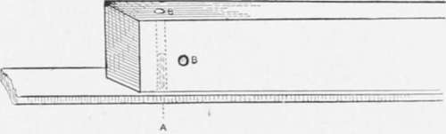
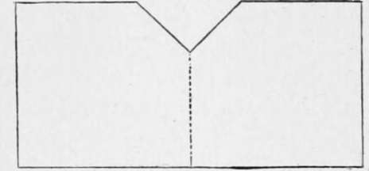
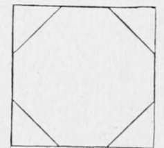
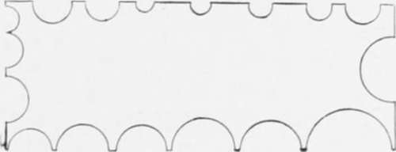

How To Make A Fishing Rod. Part 2
Description
This section is from the book "American Game Fishes", by W. A. Perry. Also available from Amazon: American Game Fishes: Their Habits, Habitat, and Peculiarities; How, When, and Where to Angle for Them.
How To Make A Fishing Rod. Part 2
First, plane one side perfectly smooth, then plane the opposite side; next take a right and then a left side, and so plane that a true square is preserved, no matter what taper is arrived at. You want a tapered square for the first joint that at the butt will just go in the gauge at the half-inch mark, and at the other end will fit just short of the forty-twoinch notch. Having planed until you have got these measurements, you are ready for the next operation. (Par parenthèse, each joint should be long enough to allow for the cutting off of the bored end.)
Fig. 21.
The next process is to convert the square into an octagon.
To do this you need a length of wood groved out to the extent of a right-angle (see fig. 22) in which to lay the joint. It may be of one piece, or two pieces, glued together, the latter is easiest to make. Before placing the square joint, however, it is well to take up the ends and mark with pencil a true octagon, and cut with a sharp knife carefully to the marks (see fig. 23). Then plane away, as before. Of course a constant constricting of the gauge is necessary in this as in the preceding process, so that none of the sides are untrue. The next process is, with the small plane to shave off the corners of the octagon, and further lightly shave until a round joint is approximated to. This rounding process can be continued with scraper, glass and fine sandpaper, till it is true and exactly to measurement.
I mentioned the pieces of old saw-steel in my enumeration of tools. Here is just where their usefulness comes in. Fig. 24 represents a piece filed into semicircular hollows, with their edges made sharp. With this convenient tool you will find the process of obtaining a truly round joint greatly facilitated. Now test your material. Bend it with considerable force in different directions. If it resumes the original shape without any set, you are a very fortunate individual in possessing a piece of superlative lance-wood. If it "sets" badly, hang it up in a dry room for the next three months; it is not sufficiently seasoned.
Fig. 22.
Fig. 23.
Now go to work and round up your other joints in precisely the same manner. The next operation is to fit the ferrules. The ferrules I recommend are those without dowelpins, and the female ferrule should be fitted on the wood with care, using the file and scraper for the purpose. Be very careful to evenly cut away the wood, so that they go on perfectly straight. Be also careful not'to push the joint too far in the ferrule, but just enough to hold the male securely. Fig. 16 shows about the right proportion. It is well to give the wood plenty of room in the ferrules, which room or space is to be filled up with whipping and cement. This is to provide for the possible swelling of the wood. I have seen the male ferrule split and enlarged so that the rod could not be jointed together, owing to the tightness of the fit and the accidental immersion of the joint.
I have tried various cements, but have narrowed down my preferences to two: one is the liquid solution of India rubber or gutta-percha (I don't know which), termed, in the hardware stores, Prof. Callan's Brazilian Gum. A solution of
Fig. 54.
India rubber in chloroform is good, if this cannot be had, or a solution of the same material in bi-sulphide of carbon. These are of a family, and are about equal in merit-readily melted, if a break of the rod necessitates, and drying quickly when applied. The other cement is the same that I, personally, use as a wax in fly-making. It is thus composed: one ounce clear light resin; one teaspoonful oil (boiled is best); one drachm gutta-percha (sheet). Melt all together, pour into water, and pull as you would pull candy. Le Page's glue is also good.
Having prepared those parts of the joints destined to receive the ferrules so that there is a small but appreciable space left between the wood and metal, wind the wood with silk rubbed well with the cement. You will have already decided how far the ferrule is to go on the wood, and have wound the silk to that point. Now push on the ferrule, leaning the end against a firm wall or door-post. Do not of course use a mallet, but when you have got the ferrule on as far as you can get it by main force, light your spirit lamp and heat the ferrule or hold it over the hot stove-coals till the inner cement is softened, and the ferrule itself somewhat expanded. Then push the ferrule into place, and it is a hundred chances to one against its ever starting, even in the driest weather. If ever it does, the operation must be repeated, using a little thicker silk and more cement.
Never under any circumstances drive a pin in to secure the ferrule-it is a source of weakness, and if you have to replace the ferrule it causes four-fold labor.
You have now got your rod to position where you can test its "feel"-its hanging and balance. It is not finally rounded off; and though you have "trued" it to a taper as far as you could, you have to correct crookedness and lack of balance- poise-in the hand. Joint it together and handle it. I go to the length of fitting on the handle (which I make separately, sometimes half-a-dozen at a time), and attaching reel and line, and casting with the rod to see the kind of implement I have.
The changes to be made can scarcely be enumerated here, so much do they depend on the quality of the wood-the individual likes and dislikes of the user and his previous skill. A fly-rod should be stiff enough to have no droop in it-that is, for single-handed weapons. If it is unevenly elastic (and the best of lance-wood is that) it must be reduced, where it isstiffer, to adjust it to the strength of the most pliable part. Other points will occur to you as you go along, but be sure that your rod suits your hand. An ill-fitting rod is as bad as an ill-fitting gun, and both are abominations. If the joints crook at all, heat over a warm stove, and get the wood as you wish it, then tie to a perfectly straight steel rod for a time.
Continue to: